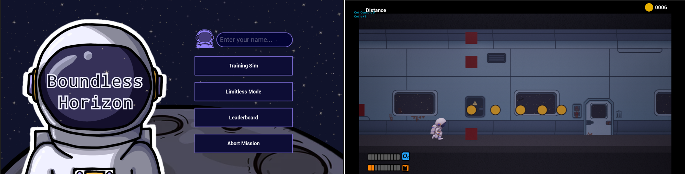
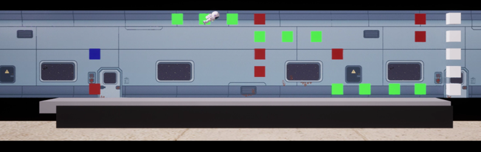
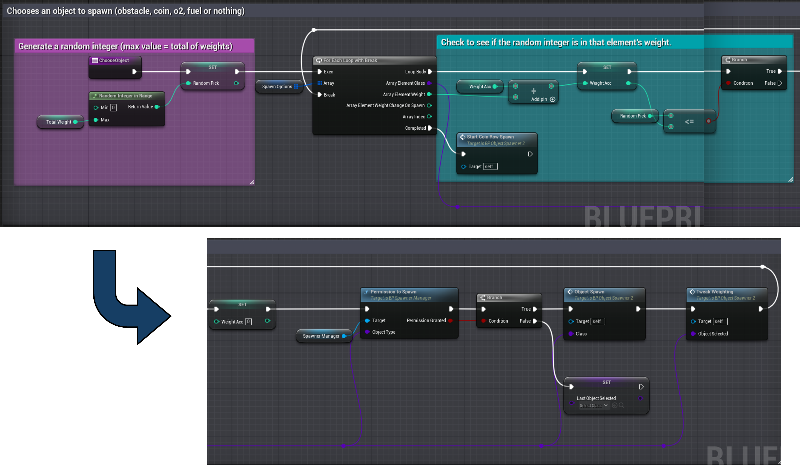
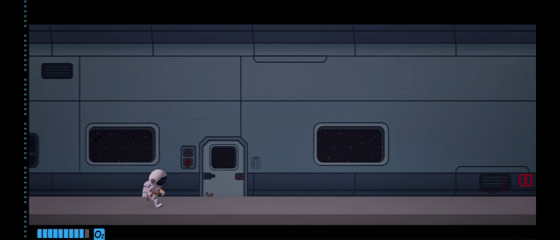

Boundless Horizon
Solo University Project - UE5 Blueprints
Boundless Horizon is a third-person endless runner set on the moon, inspired by Jetpack Joyride. Players will first complete a training simulation, they must dash through a lunar base before launching into a first-person sprint across the moon’s surface, dodging deranged astronauts to reach their ship. Success unlocks Limitless Mode – a relentless test of precision, where the pace never stops rising and obstacles become increasingly unforgiving.
The goal of this project was to build a playable proof of concept within a nine-week timeframe, developed entirely in Unreal Engine 5 using Blueprints. My personal aim was to include a wide variety of features and mechanics, to broaden my knowledge of UE5.
Details
- March 2024 - May 2024 (9 Weeks)
- Solo University Project
- A 2.5D side-scrolling game featuring both side-on and first-person perspectives
- Focused on gameplay programming and UI design
- Features include: menus, randomized pickup and obstacle spawning, enemy AI, and multiple gamemodes
Game Mechanics / Features
Backgrounds
I created all the background art for this game. I experimented with several tools, including Ibis Paint, a pixel art app, and Krita, before finding that PowerPoint best suited my needs for this project. The clean shapes and rounded corners available in PowerPoint worked well for the bold, modular style I wanted, allowing me to quickly produce varied wall sections. While I plan to use more professional tools like Photoshop in future projects, PowerPoint provided an efficient solution for this prototype, where visuals were not the main focus.

UI
This project was my first attempt at creating UI – I designed and implemented menus, a leaderboard and score tracking elements for it, ensuring each element was clear and easy to understand for the player, while keeping the visuals consistent with the game’s aesthetic. For the main menu, I used a generic button widget and assigned functionality as they were added to the menu, this allowed me to easily expand and make edits to the main menu, without remaking repeat elements. I also created progress bars, along with coin and distance counters, to help players keep track of their score.
Object Spawner
For this game, I created a dynamic object spawner to manage obstacles and pickups. My initial approach used a full grid: objects would spawn across it, move, and then repeat with a new grid. While this idea could have worked, the code became overly complex, and the functionality wasn’t quite right. I reworked the system into a column-based spawner: each spawner generates objects at set intervals, with probabilities controlling how often each object appears. If an obstacle spawns, the chance of another appearing is temporarily lowered. Using a manager, I can set limits - such as a maximum of three obstacles at a time - to ensure no impassible walls are spawned, while also dynamically adjusting spawn probabilities based on recently spawned items. To implement this efficiently, I researched how to have spawners operate independently while still being managed centrally. I discovered that child blueprint classes could be added as components within a larger parent class. This setup allows the parent to control shared logic (like spawn caps and rates) while each spawner handles its own probabilities. It effectively connects the system while keeping individual spawners modular and flexible.
Below is a snippet of the spawner code. This determines which object will spawn based on probabilities and previously spawned items. Once it has selected an item, it speaks with the spawner manager to check that it is allowed to spawn it, before spawning the item and running a function to tweak the item weightings ready for the next spawn. To see this system in more detail, please see the technical video below.
Niagara Particle System
In this project, I expanded on my basic Niagara skills to create this cool fire effect for my comet obstacle! This allowed me to experiment with particle behaviour, colour gradients and lifetime settings, building a strong foundation for future VFX work.
Technical Video - Full Project
This is the technical video I made for this project. It contains more information about the project and an overview of the blueprints. I have provided a contents list at the beginning of the video, should you wish to view specific systems in more depth!